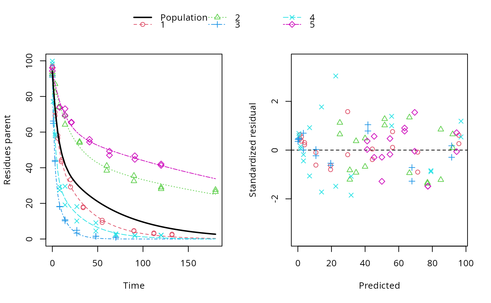

This functions sets up a nonlinear mixed effects model for an mmkin row object. An mmkin row object is essentially a list of mkinfit objects that have been obtained by fitting the same model to a list of datasets.
# S3 method for mmkin nlme( model, data = sys.frame(sys.parent()), fixed, random = fixed, groups, start, correlation = NULL, weights = NULL, subset, method = c("ML", "REML"), na.action = na.fail, naPattern, control = list(), verbose = FALSE ) # S3 method for nlme.mmkin print(x, digits = max(3, getOption("digits") - 3), ...) # S3 method for nlme.mmkin update(object, ...)
Arguments
| model | An mmkin row object. |
|---|---|
| data | Ignored, data are taken from the mmkin model |
| fixed | Ignored, all degradation parameters fitted in the mmkin model are used as fixed parameters |
| random | If not specified, correlated random effects are set up for all optimised degradation model parameters using the log-Cholesky parameterization nlme::pdLogChol that is also the default of the generic nlme method. |
| groups | See the documentation of nlme |
| start | If not specified, mean values of the fitted degradation parameters taken from the mmkin object are used |
| correlation | See the documentation of nlme |
| weights | passed to nlme |
| subset | passed to nlme |
| method | passed to nlme |
| na.action | passed to nlme |
| naPattern | passed to nlme |
| control | passed to nlme |
| verbose | passed to nlme |
| x | An nlme.mmkin object to print |
| digits | Number of digits to use for printing |
| ... | Update specifications passed to update.nlme |
| object | An nlme.mmkin object to update |
Value
Upon success, a fitted 'nlme.mmkin' object, which is an nlme object with additional elements. It also inherits from 'mixed.mmkin'.
Note
As the object inherits from nlme::nlme, there is a wealth of
methods that will automatically work on 'nlme.mmkin' objects, such as
nlme::intervals(), nlme::anova.lme() and nlme::coef.lme().
See also
Examples
ds <- lapply(experimental_data_for_UBA_2019[6:10], function(x) subset(x$data[c("name", "time", "value")], name == "parent")) f <- mmkin(c("SFO", "DFOP"), ds, quiet = TRUE, cores = 1) library(nlme) f_nlme_sfo <- nlme(f["SFO", ])#> Warning: Iteration 1, LME step: nlminb() did not converge (code = 1). Do increase 'msMaxIter'!#> Model df AIC BIC logLik Test L.Ratio p-value #> f_nlme_sfo 1 6 622.0677 637.0666 -305.0338 #> f_nlme_dfop 2 15 487.0134 524.5105 -228.5067 1 vs 2 153.0543 <.0001#> Kinetic nonlinear mixed-effects model fit by maximum likelihood #> #> Structural model: #> d_parent/dt = - ((k1 * g * exp(-k1 * time) + k2 * (1 - g) * exp(-k2 * #> time)) / (g * exp(-k1 * time) + (1 - g) * exp(-k2 * time))) #> * parent #> #> Data: #> 90 observations of 1 variable(s) grouped in 5 datasets #> #> Log-likelihood: -228.5067 #> #> Fixed effects: #> list(parent_0 ~ 1, log_k1 ~ 1, log_k2 ~ 1, g_qlogis ~ 1) #> parent_0 log_k1 log_k2 g_qlogis #> 94.18273 -1.82135 -4.16872 0.08949 #> #> Random effects: #> Formula: list(parent_0 ~ 1, log_k1 ~ 1, log_k2 ~ 1, g_qlogis ~ 1) #> Level: ds #> Structure: General positive-definite, Log-Cholesky parametrization #> StdDev Corr #> parent_0 2.4656397 prnt_0 log_k1 log_k2 #> log_k1 0.7950788 0.240 #> log_k2 1.2605419 0.150 0.984 #> g_qlogis 0.5013272 -0.075 0.843 0.834 #> Residual 2.3308100 #>#> $distimes #> DT50 DT90 DT50back DT50_k1 DT50_k2 #> parent 10.57119 101.0652 30.42366 4.283776 44.80015 #>ds_2 <- lapply(experimental_data_for_UBA_2019[6:10], function(x) x$data[c("name", "time", "value")]) m_sfo_sfo <- mkinmod(parent = mkinsub("SFO", "A1"), A1 = mkinsub("SFO"), use_of_ff = "min", quiet = TRUE) m_sfo_sfo_ff <- mkinmod(parent = mkinsub("SFO", "A1"), A1 = mkinsub("SFO"), use_of_ff = "max", quiet = TRUE) m_dfop_sfo <- mkinmod(parent = mkinsub("DFOP", "A1"), A1 = mkinsub("SFO"), quiet = TRUE) f_2 <- mmkin(list("SFO-SFO" = m_sfo_sfo, "SFO-SFO-ff" = m_sfo_sfo_ff, "DFOP-SFO" = m_dfop_sfo), ds_2, quiet = TRUE) f_nlme_sfo_sfo <- nlme(f_2["SFO-SFO", ])#> Warning: Iteration 1, LME step: nlminb() did not converge (code = 1). Do increase 'msMaxIter'!#> Warning: Iteration 2, LME step: nlminb() did not converge (code = 1). Do increase 'msMaxIter'!# With formation fractions this does not coverge with defaults # f_nlme_sfo_sfo_ff <- nlme(f_2["SFO-SFO-ff", ]) #plot(f_nlme_sfo_sfo_ff) # With the log-Cholesky parameterization, this converges in 11 # iterations and around 100 seconds, but without tweaking control # parameters (with pdDiag, increasing the tolerance and pnlsMaxIter was # necessary) f_nlme_dfop_sfo <- nlme(f_2["DFOP-SFO", ])#> Warning: Iteration 1, LME step: nlminb() did not converge (code = 1). Do increase 'msMaxIter'!#> Warning: Iteration 2, LME step: nlminb() did not converge (code = 1). Do increase 'msMaxIter'!#> Warning: Iteration 3, LME step: nlminb() did not converge (code = 1). Do increase 'msMaxIter'!#> Warning: Iteration 4, LME step: nlminb() did not converge (code = 1). Do increase 'msMaxIter'!#> Model df AIC BIC logLik Test L.Ratio p-value #> f_nlme_dfop_sfo 1 28 811.7199 899.5222 -377.8599 #> f_nlme_sfo_sfo 2 15 1075.1934 1122.2304 -522.5967 1 vs 2 289.4736 <.0001#> $ff #> parent_sink parent_A1 A1_sink #> 0.6512742 0.3487258 1.0000000 #> #> $distimes #> DT50 DT90 #> parent 18.03144 59.89916 #> A1 102.72949 341.25997 #>#> $ff #> parent_A1 parent_sink #> 0.2762167 0.7237833 #> #> $distimes #> DT50 DT90 DT50back DT50_k1 DT50_k2 #> parent 11.15024 133.9652 40.32755 4.688015 62.16017 #> A1 235.83191 783.4167 NA NA NA #>if (length(findFunction("varConstProp")) > 0) { # tc error model for nlme available # Attempts to fit metabolite kinetics with the tc error model are possible, # but need tweeking of control values and sometimes do not converge f_tc <- mmkin(c("SFO", "DFOP"), ds, quiet = TRUE, error_model = "tc") f_nlme_sfo_tc <- nlme(f_tc["SFO", ]) f_nlme_dfop_tc <- nlme(f_tc["DFOP", ]) AIC(f_nlme_sfo, f_nlme_sfo_tc, f_nlme_dfop, f_nlme_dfop_tc) print(f_nlme_dfop_tc) }#> Warning: Iteration 1, LME step: nlminb() did not converge (code = 1). Do increase 'msMaxIter'!#> Warning: Iteration 14, LME step: nlminb() did not converge (code = 1). PORT message: false convergence (8)#> Warning: Iteration 1, LME step: nlminb() did not converge (code = 1). Do increase 'msMaxIter'!#> Warning: Iteration 2, LME step: nlminb() did not converge (code = 1). Do increase 'msMaxIter'!#> Warning: Iteration 4, LME step: nlminb() did not converge (code = 1). PORT message: false convergence (8)#> Warning: Iteration 5, LME step: nlminb() did not converge (code = 1). PORT message: false convergence (8)#> Warning: Iteration 6, LME step: nlminb() did not converge (code = 1). PORT message: false convergence (8)#> Warning: Iteration 7, LME step: nlminb() did not converge (code = 1). PORT message: false convergence (8)#> Warning: Iteration 8, LME step: nlminb() did not converge (code = 1). PORT message: false convergence (8)#> Warning: Iteration 9, LME step: nlminb() did not converge (code = 1). PORT message: false convergence (8)#> Warning: Iteration 10, LME step: nlminb() did not converge (code = 1). PORT message: false convergence (8)#> Warning: Iteration 11, LME step: nlminb() did not converge (code = 1). PORT message: false convergence (8)#> Warning: Iteration 12, LME step: nlminb() did not converge (code = 1). PORT message: false convergence (8)#> Warning: Iteration 14, LME step: nlminb() did not converge (code = 1). PORT message: false convergence (8)#> Warning: Iteration 15, LME step: nlminb() did not converge (code = 1). PORT message: false convergence (8)#> Warning: Iteration 16, LME step: nlminb() did not converge (code = 1). PORT message: false convergence (8)#> Warning: Iteration 17, LME step: nlminb() did not converge (code = 1). PORT message: false convergence (8)#> Warning: Iteration 18, LME step: nlminb() did not converge (code = 1). PORT message: false convergence (8)#> Kinetic nonlinear mixed-effects model fit by maximum likelihood #> #> Structural model: #> d_parent/dt = - ((k1 * g * exp(-k1 * time) + k2 * (1 - g) * exp(-k2 * #> time)) / (g * exp(-k1 * time) + (1 - g) * exp(-k2 * time))) #> * parent #> #> Data: #> 90 observations of 1 variable(s) grouped in 5 datasets #> #> Log-likelihood: -228.3575 #> #> Fixed effects: #> list(parent_0 ~ 1, log_k1 ~ 1, log_k2 ~ 1, g_qlogis ~ 1) #> parent_0 log_k1 log_k2 g_qlogis #> 93.6695 -1.9187 -4.4253 0.2215 #> #> Random effects: #> Formula: list(parent_0 ~ 1, log_k1 ~ 1, log_k2 ~ 1, g_qlogis ~ 1) #> Level: ds #> Structure: General positive-definite, Log-Cholesky parametrization #> StdDev Corr #> parent_0 2.8574651 prnt_0 log_k1 log_k2 #> log_k1 0.9689083 0.506 #> log_k2 1.5798002 0.446 0.997 #> g_qlogis 0.5761569 -0.457 0.247 0.263 #> Residual 1.0000000 #> #> Variance function: #> Structure: Constant plus proportion of variance covariate #> Formula: ~fitted(.) #> Parameter estimates: #> const prop #> 2.0376990 0.0221686f_2_obs <- mmkin(list("SFO-SFO" = m_sfo_sfo, "DFOP-SFO" = m_dfop_sfo), ds_2, quiet = TRUE, error_model = "obs") f_nlme_sfo_sfo_obs <- nlme(f_2_obs["SFO-SFO", ])#> Warning: Iteration 1, LME step: nlminb() did not converge (code = 1). Do increase 'msMaxIter'!#> Kinetic nonlinear mixed-effects model fit by maximum likelihood #> #> Structural model: #> d_parent/dt = - k_parent_sink * parent - k_parent_A1 * parent #> d_A1/dt = + k_parent_A1 * parent - k_A1_sink * A1 #> #> Data: #> 170 observations of 2 variable(s) grouped in 5 datasets #> #> Log-likelihood: -462.2203 #> #> Fixed effects: #> list(parent_0 ~ 1, log_k_parent_sink ~ 1, log_k_parent_A1 ~ 1, log_k_A1_sink ~ 1) #> parent_0 log_k_parent_sink log_k_parent_A1 log_k_A1_sink #> 88.682 -3.664 -4.164 -4.665 #> #> Random effects: #> Formula: list(parent_0 ~ 1, log_k_parent_sink ~ 1, log_k_parent_A1 ~ 1, log_k_A1_sink ~ 1) #> Level: ds #> Structure: General positive-definite, Log-Cholesky parametrization #> StdDev Corr #> parent_0 4.9153305 prnt_0 lg_k__ l___A1 #> log_k_parent_sink 1.8158570 0.956 #> log_k_parent_A1 1.0514548 0.821 0.907 #> log_k_A1_sink 0.4924122 0.035 0.315 0.533 #> Residual 6.3987599 #> #> Variance function: #> Structure: Different standard deviations per stratum #> Formula: ~1 | name #> Parameter estimates: #> parent A1 #> 1.0000000 0.2040647#> Warning: Iteration 1, LME step: nlminb() did not converge (code = 1). Do increase 'msMaxIter'!#> Warning: Iteration 2, LME step: nlminb() did not converge (code = 1). Do increase 'msMaxIter'!#> Warning: Iteration 3, LME step: nlminb() did not converge (code = 1). Do increase 'msMaxIter'!#> Warning: Iteration 4, LME step: nlminb() did not converge (code = 1). Do increase 'msMaxIter'!f_2_tc <- mmkin(list("SFO-SFO" = m_sfo_sfo, "DFOP-SFO" = m_dfop_sfo), ds_2, quiet = TRUE, error_model = "tc") # f_nlme_sfo_sfo_tc <- nlme(f_2_tc["SFO-SFO", ]) # stops with error message f_nlme_dfop_sfo_tc <- nlme(f_2_tc["DFOP-SFO", ])#> Warning: Iteration 1, LME step: nlminb() did not converge (code = 1). Do increase 'msMaxIter'!#> Warning: Iteration 2, LME step: nlminb() did not converge (code = 1). Do increase 'msMaxIter'!#> Warning: Iteration 3, LME step: nlminb() did not converge (code = 1). Do increase 'msMaxIter'!#> Warning: Iteration 4, LME step: nlminb() did not converge (code = 1). Do increase 'msMaxIter'!#> Warning: Iteration 6, LME step: nlminb() did not converge (code = 1). PORT message: false convergence (8)#> Warning: Iteration 7, LME step: nlminb() did not converge (code = 1). PORT message: false convergence (8)#> Warning: Iteration 8, LME step: nlminb() did not converge (code = 1). PORT message: false convergence (8)#> Warning: Iteration 9, LME step: nlminb() did not converge (code = 1). PORT message: false convergence (8)#> Warning: Iteration 11, LME step: nlminb() did not converge (code = 1). PORT message: false convergence (8)#> Warning: Iteration 12, LME step: nlminb() did not converge (code = 1). PORT message: false convergence (8)#> Warning: Iteration 15, LME step: nlminb() did not converge (code = 1). PORT message: false convergence (8)#> Warning: Iteration 25, LME step: nlminb() did not converge (code = 1). PORT message: false convergence (8)# We get warnings about false convergence in the LME step in several iterations # but as the last such warning occurs in iteration 25 and we have 28 iterations # we can ignore these anova(f_nlme_dfop_sfo, f_nlme_dfop_sfo_obs, f_nlme_dfop_sfo_tc)#> Model df AIC BIC logLik Test L.Ratio p-value #> f_nlme_dfop_sfo 1 28 811.7199 899.5222 -377.8599 #> f_nlme_dfop_sfo_obs 2 29 784.1304 875.0685 -363.0652 1 vs 2 29.5895 <.0001 #> f_nlme_dfop_sfo_tc 3 29 791.9981 882.9362 -366.9990# }